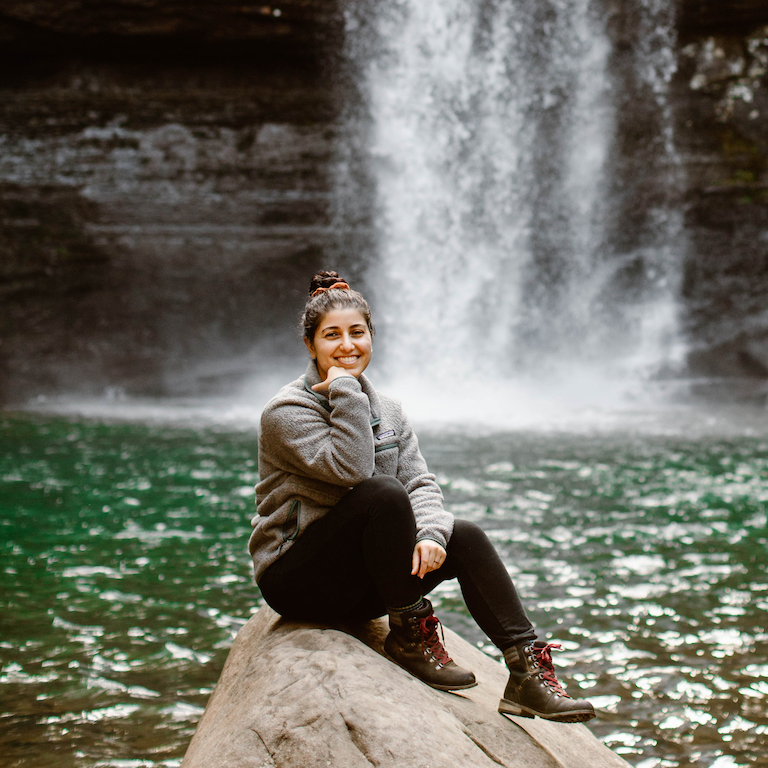
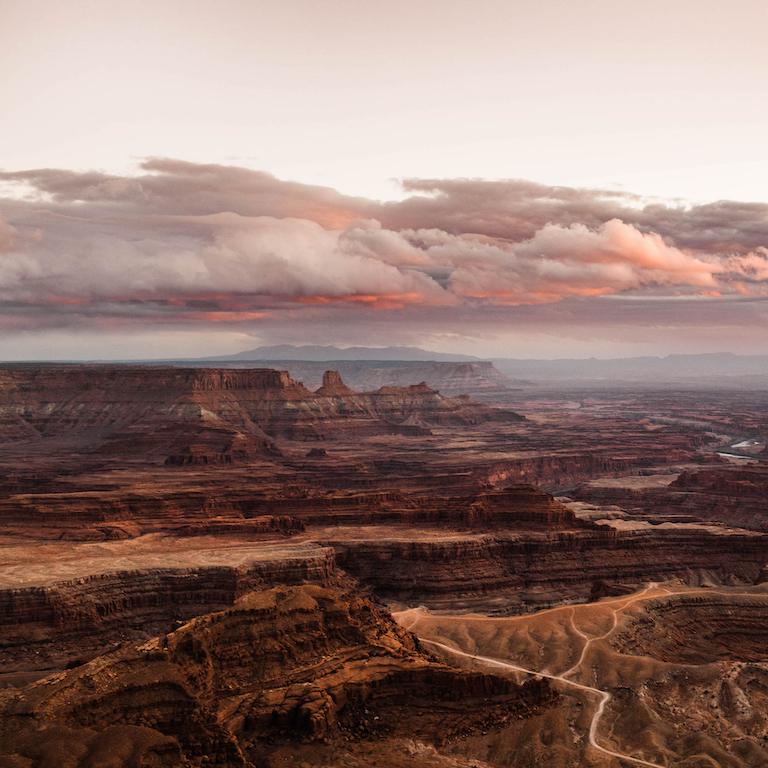

I believe in living a life that is well documented. As a professional photographer,
everything I do is about capturing moments. For my everyday work, this means documenting
adventurous weddings in the great outdoors for my clients. However, it goes beyond that.
A life well documented also means making sure I'm capturing the small moments, whether
that's an image of the alpine lake I hiked to over the weekend or the window of the coffee
shop I frequent in the mornings. It also means writing about those experiences too.
I want this little space on the web do to exactly that: show you the intersections of my life
and the complexities of both creating art for myself and for those around me. Being a
professional photographer, it's easy to make documentation all about the client, but it doesn't
have to be that way (nor should it!). This portfolio shows you the multi-faceted aspects of
who I am both professionally and personally. Who is Sheena? Let's go on a journey to find out.
Let's Go on a Journey
You get to choose your own adventure. Interested in learning more about me? Head on over to
the biography page to learn more about my background. Want to see what adventures I've been up to?
The adventure gallery is for you! I detail my favorite travels over there.
Hey. Hi. Hello. It's Sheena.

I like to joke that there's pretty much nothing normal about me. I'm both creative and
analytical. I'm introverted, yet also love getting to know people. I'm an avid hiker and
explorer, but I also consider myself a homebody. Curious to know more about me?
A Peek at My Adventures

I'm a big believer that part of living a well-rounded life means living a life of exploration.
When I have free time, I try as hard as I can to not be at home; to get out and experience
new trails, new mountains, new beaches, and new cultures. These are some of the places
that have defined me.